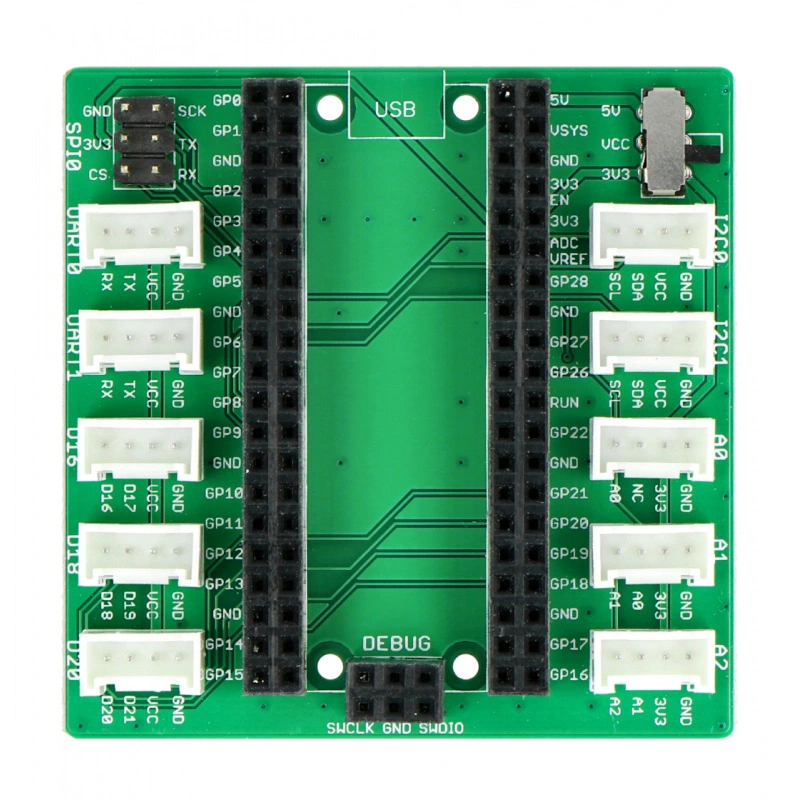

Grove Shield for Pi Pico
Seeed's passive Grove adapter for the Raspberry Pi Pico 2 W. GrovePicoShield names every socket. The Pico 2 W page has the board notes.

Sockets
The Grove Shield for Pi Pico v1.0 is a
passive adapter for the Raspberry Pi Pico 2 W. GrovePicoShield
resolves its sockets to the Pico pins: D16, D18 and D20 are digital sockets; A0, A1 and A2 are ADC sockets; I2C0 is
the normal MCU.getI2c() bus on GP8/GP9; and I2C1, UART0, UART1 and SPI0 expose their signal pins individually. The
analog sockets always receive 3.3 V; set the power switch to 3.3 V for Grove modules that require it.
The shield seen from above, USB at the top, with each socket's pins as printed under it. The first pin is the
SIG wire its getter returns. The analog sockets always take 3.3 V; the others take VCC from the power switch.
+----------------------------[ USB ]-----------------------------+
| SPI0 GND o o SCK VCC switch: 5V |
| 3V3 o o TX 3V3 |
| CS o o RX |
| |
| UART0 RX=GP1 TX=GP0 I2C0 SCL=GP9 SDA=GP8 |
| [RX |TX |VCC|GND] [SCL|SDA|VCC|GND] |
| UART1 RX=GP5 TX=GP4 I2C1 SCL=GP7 SDA=GP6 |
| [RX |TX |VCC|GND] Raspberry Pi [SCL|SDA|VCC|GND] |
| D16 SIG=GP16 Pico 2 W A0 SIG=GP26 |
| [D16|D17|VCC|GND] [A0 |NC |3V3|GND] |
| D18 SIG=GP18 A1 SIG=GP27 |
| [D18|D19|VCC|GND] [A1 |A0 |3V3|GND] |
| D20 SIG=GP20 A2 SIG=GP28 |
| [D20|D21|VCC|GND] [A2 |A1 |3V3|GND] |
+-------------------[ DEBUG: SWCLK GND SWDIO ]-------------------+
Use the digital or analog getters with the same pin-based drivers shown below. For an I2C module such as the Grove
SSD1315 OLED, pass shield.getI2c0() to the driver. The Pico board page
has the complete socket diagram and pin table.
API
| Method | What it does |
|---|---|
getD16(), getD18(), getD20() |
The GPIO pin behind each digital socket. |
getA0(), getA1(), getA2() |
The analog sockets: the Pico's ADC pins GP26 to GP28. |
getI2c0(), getI2c0Sda(), getI2c0Scl() |
The I2C0 bus (GP8 and GP9), passed to a driver with getI2c0(). |
getI2c1Sda(), getI2c1Scl() |
The I2C1 pins (GP6 and GP7), for drivers that wire their own bus. |
getUart0Rx(), getUart0Tx(), getUart1Rx(), getUart1Tx() |
The UART0 and UART1 signal pins. |
getSpi0Miso(), getSpi0Mosi(), getSpi0Sck(), getSpi0Cs() |
The SPI0 signal pins. |
Example
import io.github.jabrena.juno.hardware.device.grove.GrovePicoShield;
import io.github.jabrena.juno.hardware.gpio.DigitalOutput;
import io.github.jabrena.juno.hardware.serial.BaudRate;
import io.github.jabrena.juno.hardware.serial.Serial;
import io.github.jabrena.juno.util.Delay;
public final class GrovePicoLed {
public static void main(String[] args) {
Serial.begin(BaudRate.BAUD_115200);
GrovePicoShield shield = new GrovePicoShield();
DigitalOutput led = DigitalOutput.of(shield.getD16());
while (true) {
led.high();
Delay.millis(500);
led.low();
Delay.millis(500);
}
}
}
The Pico 2 W's own Grove example is RaspberryPico2GroveOled.